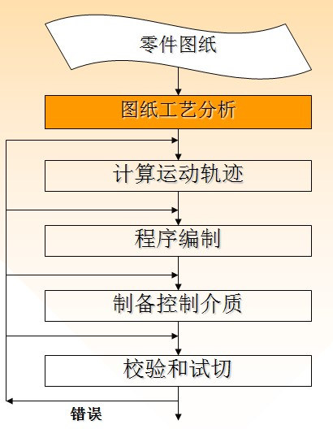
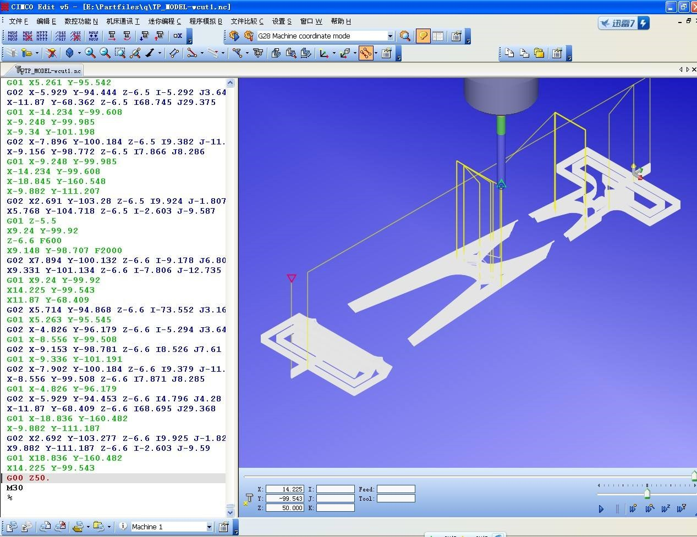

手工编程概念：分析零件图纸、制订工艺规程、计算刀具运动轨迹、编写零件加工程序清单、制作控制介质直到程序校验，整个过程主要由人来完成，这种人工制备零件加工程序的方法称为手工编程。
对编程人员的要求高，不仅要熟悉数控代码和编程规则，而且还必须具备机械加工工艺知识和数值计算能力。用手工编程时，一个零件的编程时间与机床实际加工时间之比，平均约为30：1。虽说现在有电脑了编程很方便，但我们最好还是掌握些基本的手工编程，要是遇到特殊情况就能用上。
手工编程流程：
编程的具体步骤说明如下：
在数控机床上加工零件，工艺人员拿到的原始资料是零件图。根据零件图，可以对零件的形状、尺寸精度、表面粗糙度、工件材料、毛坯种类和热处理状况等进行分析，然后选择机床、刀具，确定定位夹紧装置、加工方法、加工顺序及切削用量的大小。在确定工艺过程中，应充分考虑所用数控机床的指令功能，充分发挥机床的效能，做到加工路线合理、走刀次数少和加工工时短等。此外，还应填写有关的工艺技术文件，如数控加工工序卡片、数控刀具卡片、走刀路线图等。
根据零件图的几何尺寸及设定的编程坐标系，计算出刀具中心的运动轨迹，得到全部刀位数据。一般数控系统具有直线插补和圆弧插补的功能，对于形状比较简单的平面形零件（如直线和圆弧组成的零件）的轮廓加工，只需要计算出几何元素的起点、终点、圆弧的圆心（或圆弧的半径）、两几何元素的交点或切点的坐标值。如果数控系统无刀具补偿功能，则要计算刀具中心的运动轨迹坐标值。对于形状复杂的零件（如由非圆曲线、曲面组成的零件），需要用直线段（或圆弧段）逼近实际的曲线或曲面，根据所要求的加工精度计算出其节点的坐标值。
根据加工路线计算出刀具运动轨迹数据和已确定的工艺参数及辅助动作，编程人员可以按照所用数控系统规定的功能指令及程序段格式，逐段编写出零件的加工程序。编写时应注意：第一，程序书写的规范性，应便于表达和交流；第二，在对所用数控机床的性能与指令充分熟悉的基础上，各指令使用的技巧、程序段编写的技巧。
将加工程序输入数控机床的方式有：光电阅读机、键盘、磁盘、磁带、存储卡、连接上级计算机的DNC接口及网络等。目前常用的方法是通过键盘直接将加工程序输入（MDI方式）到数控机床程序存储器中或通过计算机与数控系统的通讯接口将加工程序传送到数控机床的程序存储器中，由机床操作者根据零件加工需要进行调用。现在一些新型数控机床已经配置大容量存储卡存储加工程序，当作数控机床程序存储器使用，因此数控程序可以事先存入存储卡中。
数控程序必须经过校验和试切才能正式加工。在有图形模拟功能的数控机床上，可以进行图形模拟加工，检查刀具轨迹的正确性，对无此功能的数控机床可进行空运行检验。但这些方法只能检验出刀具运动轨迹是否正确，不能查出对刀误差、由于刀具调整不当或因某些计算误差引起的加工误差及零件的加工精度，所以有必要经过零件加工的首件试切的这一重要步骤。当发现有加工误差或不符合图纸要求时，应分析误差产生的原因，以便修改加工程序或采取刀具尺寸补偿等措施，直到加工出合乎图样要求的零件为止。随着数控加工技术的发展，可采用先进的数控加工仿真方法对数控加工程序进行校核。
数控加工程序指令代码
在数控机床加工程序中，我国和国际上都广泛使用准备功能G指令、辅助功能M指令、进给功能F指令、刀具功能T指令和主轴转速功能S指令等5种指令代码来描述加工工艺过程和数控机床的各种运动特征。
可培训内容：
>FANUC/SIEMENS数控车床编程实例
可培训内容：
>FANUC /SIEMENS系统数控铣床编程实例
CIMCO Edit是CIMCO软件公司专为数控编程而最新设计的编程工具，内置强大而实用的数控编辑功能、文件的智能比较、刀位轨迹的三维模拟、DNC传输等功能，可以满足您易学高效、功能强大、控制系统多样的编程要求。在欧美发达国家数控编程人员几乎人手一套，成为编程人员名副其实的好帮手。
特色：